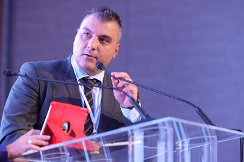

Charalampos is an Assistant Professor at the Department of Economics, University of Piraeus, specializing in Quantitative Methods in Economic Theory. His research combines rigorous econometric methodology with modern machine learning techniques to address pressing questions in European economic policy, financial regulation, and sustainability.
In parallel with his academic career, he serves as a Senior Researcher at the Gnosis Research Center, Illinois Institute of Technology in Chicago, working on computational finance and econometrics. He also holds committee appointments at the Greek Ministry of Development and the Greek Ministry of Education.
His professional experience includes executive roles as CEO of TMEDE Microfinance Solutions S.A. and Chief Risk & Investment Officer at the Engineers and Public Works Contractors Fund, where he has directed large-scale financial programs, risk frameworks, and regulatory compliance across the Greek public sector.
My research spans seven interconnected themes across economics, finance, and policy.
European economic policy, impact of shadow economy on EU competitiveness, relationship between financial markets and shadow economy.
Unsupervised machine learning in financial time-series, energy commodity clustering, predictive manifolds, ML-based tariff evaluation.
Spurious regression for stationary AR(1) processes, serial correlation effects, balance between size and power in hypothesis testing.
Migration impact on pension adequacy, sovereign debt and social security, demographics as determinants of tariffs.
Panel data spatial analysis of entrepreneurship and inequality in Greek regions, tourism spatial dimensions in the EU, CO₂ emission localization.
Insurance solvency regulation in Europe, e-government and corruption reduction, the finance-growth nexus.
Novel approaches to competition measurement using connected corporate network analysis, with empirical applications in the Greek telecommunications sector.
11 presentations at leading international venues
Strategic management, regulatory compliance, financial program implementation and governance.
Risk framework integration, project viability evaluation, audit, due diligence, scorecards.
Recommender systems, analytical methods, web applications, proposal writing.
Cross-functional leadership, strategic planning, data analytics with Tableau and SQL.
Collections strategy, credit portfolio analytics, credit scoring across Eastern European markets.
Alternate Chair (Flagship Investments), Member (Digital Education), Member (Investment Committee HDB-TMEDE).
Quantitative Methods in Economic Theory
Monetary & Financial System, Investment Appraisal, Spatial Analysis, Regulatory Policy, Auditing, Monetary Policy, Economic Analysis
Budgeting (MA in Local & Regional Development)
Research Methods, Strategic Management, Business Planning, Financial Management, Applied Mathematics, Statistics
Econometrics (Undergraduate), Qualitative Methods (Postgraduate)
Where the research meets practice: AI training programs, decision tools, and applied projects for industry and policy.
Σώμα Εκτελωνιστών Ελλάδος · 10 διαλέξεις · 20 ώρες · ~200 συμμετέχοντες
Ολοκληρωμένη εκπαιδευτική σειρά για εργαλεία AI στην τελωνειακή πράξη — δασμολογική κατάταξη, compliance & CBAM, e-Customs, ψηφιακό γραφείο. Με ανοιχτή πρόσβαση στην ψηφιακή εργαλειοθήκη: prompt library, cheat sheets, workflow checklists & AI assistant.
Open AI Toolkit →Interactive decision tool · DCF / NPV / IRR · Monte Carlo · sensitivity & break-even
Structured business planning for Just Transition regions: automated financial computations, scenario analysis, Monte Carlo simulation and break-even charts, integrating findings from the Phase B regional studies.
Launch Tool →